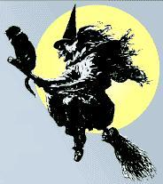
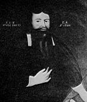
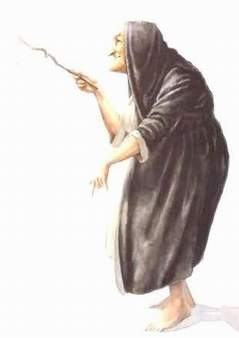
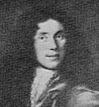

Södermalm i tid och rum. Stockholm
TROLLDOM OCH PEST
Häxprocesser
| Under Carl Carlssons kyrkoherdetid i Maria (1674-1678) drabbades huvudstaden av den andliga farsot, som går under namnet trolldomsväsendet. Karakteristiskt nog visade sig den fattiga Söderbefolkningen, som levde mera primitivt isolerad än människorna i den inre staden, särskilt mottaglig för denna hysteriska epidemi, där primitiv magi, personlig suggestion och de mest lågsinnade personliga motiv blandades om varandra till en sällsynt otäck brygd. Den egentliga smittohärden var dock Katarina, icke Maria församling. Från Katarinahållet kommo de första alarmerande rapporterna, och praktiskt taget alla offren voro Katarinabor. Den enkla förklaringen är, att smittan först spreds dit genom den s.k. Gävlepojken, en femtonårig yngling, som begett sig till Stockholm, sedan han i hemstaden med sitt vittnesmål dragit en dödsdom över sin egen mor. Snart kunde man dock berätta, »att det höres jämmer och klagan på alla fyra sidor i staden snart, såsom Västan, Östan och Öster Norr, nämligen S. Mariae församling, S. Catharinae församling och Ladugårdslands församling». Utan tvivel skulle farsoten snart ha gripit också Maria församling, om inte besinningen till sist vaknat. |
 |
|
 Carl Carlsson |
I den kommissorialrätt för undersökning av trolldomsväsendet i Stockholm, som tillsattes av rådet den 3 juni 1676, ingick Carl Carlsson som en av de prästerliga ledamöterna; de övriga voro kyrkoherdarna i Clara Olaus Bergius och i Tyska församlingen Christopher Bezelius samt komministrarna i Storkyrkan Erik Noraeus, i Clara Ivar Leufstadius och i Riddarholmen Olof Sparrman. I rätten, vars ordförande var revisionssekreteraren W. J. Coyet, ingingo dessutom några andra jurister och ämbetsmän samt två läkare, av vilka den ene var Urban Hiärne. Domstolen, som började sina förhandlingar den 30 juni, sammanträdde i Södra stadshuset vid Södermalmstorg. |
I början voro alla lika förblindade - om själva faktum, att trolldomsväsendet var en realitet, voro alla ense, och de skiljaktigheter, som förekommo i de olika ledamöternas vota, gällde mera nyanser i straffsättningen. I det första målet, som gällde en gammal finsk hustru, Malin Mattsdotter, populärt kallad »Rumpare Malin», förklarade rätten enhälligt - alltså med Hiärnes instämmande - att hon var en trollpacka. I fråga om straffet tvekade man huvudsakligen mellan tre alternativ: att hon först skulle halshuggas och sedan brännas, det lindrigaste straffet, att hon först skulle »lida någon speciem torturae», sedan halshuggas och till sist brännas, eller att hon skulle brännas levande. Rättens majoritet stannade inför det sista alternativet, det mest grymma straffet, enda gången detta tillämpats under trolldomsprocesserna vid denna tid.
|
Klart men skrämmande hade Carl Carlssons votum varit: »att hon brännes levande: ratio, att man
bör mera se på Guds namns ära än hennes olidelige pina under ett så svårt och ovant straff, helst hon
förfört många själar eller åtminstone haft intention att förföra dem till helvetis pino, av vilken hon nu
själv borde känna en försmak androm till sky och sig till påminnelse, att hon av fanen, som henne lovat
låta ett subposititiam quid lida i hennes ställe, vore bedragen».
Till majoriteten hade också Noraeus anslutit sig. Vad Hiärne beträffar är det alldeles missvisande, vad Linderholm säger, att han, som visserligen uttalade, att han ansåg detta straff allt för »cruelt», skulle röstat för, att den dömda i stället skulle nypas med heta tänger. I själva verket förordade Hiärne det andra av de tre straffalternativen: han ansåg alltså, att hon först skulle nypas med heta tänger, sedan halshuggas och till sist brännas. Också det andra fallet, som domstolen hade att ta ställning till, gällde en icke svenskfödd kvinna, Anna Simonsdotter Hack, »Tysk Annika» kallad - man frågar sig, om i den kusligt primitiva reaktionen mot de som häxor utpekade kvinnorna icke också ingått ett element av främlingshat. Straffet blev denna gång, att hon |
 |
På hösten kom vändpunkten i Stockholmsrättegången, som betecknar början till slutet på trolldomsprocesserna vid denna tid. Sedan Gävlepojken vid förnyade förhör återkallat sina tidigare anklagelser, började den psykologiska bakgrunden till hela det föregående anklagelsematerialet att rullas upp, ett lika skrämmande som belysande bidrag till modern vittnespsykologi. Den förste, som bestämt tog avstånd från den tidigare handläggningen, var Noraeus. Det skedde genom ett utttalande i domstolen den 11 september; i början av oktober kom Hiärnes skriftliga betänkande »över de anfäktade barnens i Stockholm förrige klagans återkallelse och den nya bekännelsen».
Noraeus deklaration är framförallt ett mänskligt gripande dokument. Teoretiskt står han kvar på den gamla ståndpunkten. Han förklarar, att han »fuller intet är så absurd, att han alldeles förnekar trolldom och barneförande», men, då det är en »farlig och mörk sak», kan han hädanefter inte för sitt samvete utan bättre skäl och upplysning döma någon från livet. Då det heller icke anstod hans ämbete att sitta uti en »blodsdom», ville han söka dimission från sitt uppdrag. »Och där den honom skulle bliva förvägrat», slutade Noraeus sitt märkliga anförande, »tager han lov av sitt samvete att gå härifrån och driva det ämbete, som Gud haver kallat och satt honom uti, viljandes med böner och åkallan stadigt och stundeligen, så mycket han kan, publice och privatim, Satans väsende avböja».
Domstolens fortsatta arbete, i vilket även Noraeus trots sin avsägelse deltog, kom nu i stället att inriktas på att avslöja de falska vittnesmålen och ställa de värsta anstiftarna till ansvar. Sedan det en gång börjat lossna, blottades snart den hemska masspsykosen, av vilken icke minst barnen gripits, i all sin skrämmande nakenhet. Carl Carlssons auktoritet togs nu i stället i anspråk för att pressa fram sanningen ur de motspänstiga. För de flesta av de inblandade, liksom för folket i allmänhet i de andligt smittade områdena, där ingen hade kunnat gå säker för smygande anklagelser, kändes avslöjandet som en befriande lättnad. »Och är det en lust att bo på malmen, sedan hennes oväsende upphörde», hette det, efter det att en av de värsta lögnspriderskorna oskadliggjorts, »varandes barnen, som sig nu bekänt, att de ljugit, mycket glade däröver och lika som andra människor».
| I februari 1677 konstaterade kommissorialrätten, »att de av detta oväsende numera intet höra uti staden» - farsoten var alltså nu förbi. Noraeus påminte, att en allmän tacksägelse borde ske i alla församlingar. På anmodan av rätten beslöt konsistoriet att uppkalla stadens präster och förehålla dem att tala varligt om trolldomsväsendet, »efter det inte allt så finnes i sanning, som man |
|
Pesten
»Konungen var i Bender. Här var ingen lydnad. Folket var skrämt, nedslaget och modfällt» - så har stämningen hemma i Sverige efter katastrofen vid Poltava träffande karakteriserats. Till alla olyckor kom sommaren 1710 också pesten, antagligen överförd till Stockholm genom livländska flyktingar. De första sjukdomsfallen inträffade på Ladugårdslandet, och den 19 augusti var collegium medicum övertygat om att det verkligen var den fruktansvärda farsoten, som nu nått vårt land. Från den ursprungliga smittohärden spred sig sjukdomen snabbt till den övriga staden och fick en särskilt fruktbar jordmån i proletärkvarteren på malmarna - Katarina men också Maria församling hörde till de områden, som blevo svårast härjade. Dödlighetskurvan kulminerade under sista veckan av oktober för att sedan tämligen jämnt avtaga; i början av februari hade epidemien definitivt tömt ut sin kraft.
Pesten 1710-1711 är antagligen den största katastrof, som någonsin övergått huvudstadens befolkning. En tidigt gjord statistisk sammanställning, grundad huvudsakligen på församlingarnas veckolistor, slutar på sammanlagt 17.887 döda, varav 2.125 i Maria församling. Av vissa skäl är det säkert, att dessa siffror äro alldeles för låga; räknar man med minst 20.000 för hela staden är detta sannolikt också i underkant. Visserligen torde ett rätt betydande antal icke ha varit stadsbor i egentlig bemärkelse utan utsocknes folk.
Att komma fram till exakta siffror är knappast möjligt, då dödböcker för dessa år finnas i behåll endast för Katarina församling och Finska församlingen. För Maria församlings del kan uppmärksammas en annan källa, av otvivelaktigt intresse men tidigare icke observerad i detta sammanhang. En betydande del av kyrkans årliga räkenskaper utgöras av kyrkovärdarnas redovisning för inkomsterna för lägerställen, klockor, päll, bår och bisättningar med åtföljande verifikationer, de s.k. liksedlarna. Här får man alltså besked om antalet begravna, icke om antalet i församlingen döda - siffrorna kunna icke väntas samstämma, då ett icke ringa antal utifrån, icke minst av garnisonens folk, begrovs på Maria kyrkogård. Ur personhistorisk synpunkt ge namnlistorna och liksedlarna en god ersättning för dödböckernas uppgifter.
Den första markanta stegringen visar veckan 4-10 september med 46 bokförda begravningar (föregående vecka 28). Att det är pesten, som nu börjar skörda sina offer, är tydligt redan den 5 september, då tobaksspinnaregesällen Erik Hansson lät jordfästa »tvenne små barn». På liknande tragedier, då hela familjer, eller en stor del av dem, utplånades, ges i det följande åtskilliga exempel.
Den 8 september fick uppbördsskrivaren Johan Salius följa sina två döttrar till graven, och samma dag jordfästes gardeskarlen Hinrich Möller tillsammans med sin hustru. I slutet på månaden begrovs stadsbåtsmannen Mats Erson med sin son samt båtsmannen Jean Magrilsons änka och två barn. I oktober fick arbetskarlen Daniel Andersson på en och samma gång begrava tre barn och hökaren Johan Kasberg icke mindre än fyra. En icke närmare känd läkare, doktor Petrus Omberg, lät den 14 oktober jordfästa sin dotter; den 22 i samma månad är turen kommen till honom själv och fyra dagar senare till hans hustru. Begravningskurvan följer tämligen jämnt stegringen i veckolistornas dödrapporter men med genomgående högre - i vissa fall betydligt högre - siffror. Kulmen nåddes den 31 oktober, då 62 begravningar ägde rum. Från och med slutet av november skedde jordfästningar också på den s.k. mindre kyrkogården: »en fattig gosse Johan Staffansson» tycks vara den förste, som fick sin viloplats där (25 november). Med mindre kyrkogården avses den trägårdstomt i kvarteret Bergsgruvan mindre vid Tantogatan, som vid denna tid inköpts för 800 d.k.m. från trädgårdsmästaren Hans Weiderman för att tjäna som särskild pestkyrkogård.
Då farsoten grasserade som värst, måste en orimlig arbetsbörda ha åvilat prästerskapet, trots biträde av särskilt förordnade pestpräster och även om inskränkningar gjordes i den traditionella ritualen, så att jordfästningarna ofta fingo försiggå i rent fältmässiga former. En ytterst betungande och riskabel uppgift hade också kyrkovärdarna, som skulle svara för de praktiska arrangemangen och uppbörden vid begravningarna. Åt en av dem, handelsmannen Petre, gavs efteråt det vackra betyget, att han »hela den sjukliga tiden över med all flit på kyrkiones bästa sett och låtit ingen dödsfara sig därvid förhindra». Åtskilliga döda av tjänstefolk och gesäller hos fältskärer och apotekare illustrera riskerna hos andra kategorier, som stodo i första linjen.
Stadens skolor hade stängts i mitten av september och öppnades först i början av nästa läsår. Barnadödligheten var under hela farsoten påfallande stor. När Maria skola satte i gång igen, var det med mycket glesnade led: av matrikelns 95 lärjungar redovisas 35 som döda i pesten.
|
 |
Både som miniatyrmålare och numismatiker tillhör Elias Brenner kultureliten under den karolinska tiden, och hans maka, som flitigt producerade sig som tillfällighetspoet, åtnjöt under sin egen tid ett utomordentligt skalderykte, som emellertid eftervärlden haft svårt att erkänna. Familjen blev bosatt i Maria församling, sedan Brenner år 1694 inköpt fastigheten Jupiter nr 1 i hörnet av Horns- och Repslagargatorna.Det Brennerska hemmet, icke långt från Maria kyrka, blev en samlingspunkt för skalder och kulturfolk, något av en litterär salong före den epok, då sådana kommo på modet. Som född finländare gjorde Elias Brenner också en insats, då det gällde att hjälpa till rätta flyktingar österifrån, som drevos över till Sverige under det senare skedet av det stora nordiska kriget. |
En känd Mariabo, Elias Brenner, har från sin utsiktspost vid Hornsgatan i trakten av kyrkan gett en makaber skildring av hur gatulivet under den värsta pesttiden dominerades av de förbidragande begravningsprocessionerna:
»En kort berättelse, huru det i denna pestetiden här på Södermalm avlupit med de sällsamma begravningsprocesser, dem vi alla - Gud bättre - med egna ögon sett, emedan de var stund och hela dagen igenom passerat mitt fönster förbi, och kanske i framtiden, då pesten upphört, skulle glömmas, eller åtminstone intet så lätteligen tros. I synnerhet har vi märkt dessa processer på femhanda sätt förrättas.
Den första och hederligaste är deras, som åtnjuta kyrkogårdarna, de bliva burna av vissa därtill beställda likbärare av borgerskapet, som av sig komne äro och ingen annan förtjänst för den fördärvade handelen skull veta att tillgå. De hava nu efter Collegii Medici förslag och Magistratens ordres måst anlägga en särdeles habit och det för tvenne orsaker skull: l:o att de skola vara utmärkte, att de ej så lätteligen besmitta andra. 2:o att denna dräkten, som består av svart glatt dräll, intet så lätteligen skall antaga smittan som yllekläder. De skulle och i dessa sina svarta skinande kläder på teater intet så illa representera D:r Fausti följe. Inga kappor och bårkläden får nu brukas att därigenom förekomma smittan. Av kistan, som står bar på båren, och antalet av bärarena kan man märka, vilken är hederligare eller ringare.
Den andra och något ringare processen är den, när tvenne gardieskarlar eller drängar slagit ett rep kring kistan och så bära den döde till grava. Dessa bägge föregående processer ske på sterbhusets bekostnad, men efterföljande sumptibus publicis på följande sätt:
Fram i processen gå några hederliga matroner, som för sina dygder skull haft fritt logemente på hindergården, ibland dem går en, som hela vägen ringer med en klocka: ingen annan själringning bestås åt dessa.
Sedan följer den stora pestvagnen med 4 hästar förespänd, och därpå ligger en stor kista som en lagom bagarbod, allt vackert svart omstruken. I denna kista liggia 14 à 15 lik tillika, bredevid vagnen går en åkare, som med en stor piska befordrar de döda till sitt vilorum, och så bär processen antingen Horns- eller Götegatan uppföre till en ort utom Fateburen, Hagen benämnd, där de i stora gropar var på annan bliva kastade, och kalk emellan vart lik strödd. De som hava kistor bliva fuller med kistorna nedlagde, men alla locken avtagne, sönderslagne och uppbrände och kalk strödd i kistorna hos liken. Denna stora pestvagnen har här på Södremalm ifrån d. 18 oktober in till 25 november var dag kl. 9 om morgonen farit med hela sin tillbörliga procession mitt fönster förbi, vilket varit ett ynkeligt spektakel både till se och höra.
Den 4:de processen är nästan lik den förra, allenast, att här intet går så ansenligt och präktigt till, förty här är allenast en häst spänd för en långkärra och kistan drar intet mera i sänder än 3 lik, dock tar åkaren med denna kärran sin respekt något bättre i akt än med den stora, i det denne intet går utan sätter sig gränse över kistan med en tobakspipa i munnen, och stundom klockan i den ena och piskan i den andra handen, och så kutskar han med liken till deras lägerstad.
Den 5:te, sista och ynkeligaste processen, den vi ock intet mer än en gång sett. Den sal. avsomnade var stoppad i en säck, som intet räckte honom längre än till halsen, där säcken var tillbunden, så att huvudet alldeles syntes ute, den tvenne kärringar lagt över en stång och så bar den sal. dödes andelösa lekamen till sitt vilorum. Eljest har denna säcksvepningen denna tiden varit i mode med dem, som på kärrorne blivit bortförde, ja och somliga helt nakna.
Dessa äro de ynkelige och bedrövelige likprocesser, som vi denna tiden - Gud bättre - dageligen och stundeligen fått se. Gud vare oss nådelig och låte mig aldrig mera en sådan tid erleva.»
Sedan den fruktansvärda farsoten under ungefär ett halvår gjort sitt verk, var Maria församling i vissa delar som en ödelagd stad. Mantalslängden för 1711 är till stora delar ett skrämmande protokoll över förödelsen. I vissa av fattigkvarteren kring Skinnarviken redovisas upp till ett tiotal ödegårdar, i ett fall 22 (kvarteren Haren). För en gård i kvarteret Trappan står antecknat: »Alla utburna till kärran. En liten stuga står öde, som pesten grasserat.» Om en gård i kvarteret Viggen står att läsa: »Gården står med kors på porten tillslagen och alldeles öde» - det vita korset hade varit det föreskrivna varningstecknet på de pestsmittade husen.